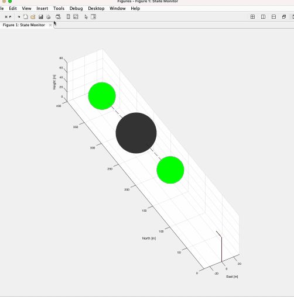

機械学習を用いた水門の検出

これは、MNIST等の標準的な機械学習を学習するためのデータではなく、実際の生のデータに機械学習を応用することを目的としたプロジェクトである。
私たちの班では、班員がインターンをしている会社から水門を通過する船のレーダー計測のデータを入手し、それに機械学習を応用した。 水門の計測データは右上のようであり、このデータだけではどの計測点が水門の可動部(門)・側壁・その他のどこに位置しているか判別できない。私たちのモデルはそれを自動的に判別するようにトレーニングされた。

有限要素法と機械学習のフレームワークを結ぶインターフェースの開発
支配方程式を直接入力できる有限要素法のフレームワークであるFEniCSと、機械学習のフレームワークであるPyTorchを結ぶインターフェイスを開発し、未知の項をニューラルネットワークで予測できるようにした。

強化学習を用いた飛行制御プログラムの開発
障害物を避けつつ、目的地を通過する飛行制御プログラムを強化学習で開発した。 学習時間を大幅に削減するために、簡易的なモデルで学習を行い、後に複雑な実際のモデルに適応するという二段階の手法を用いた。